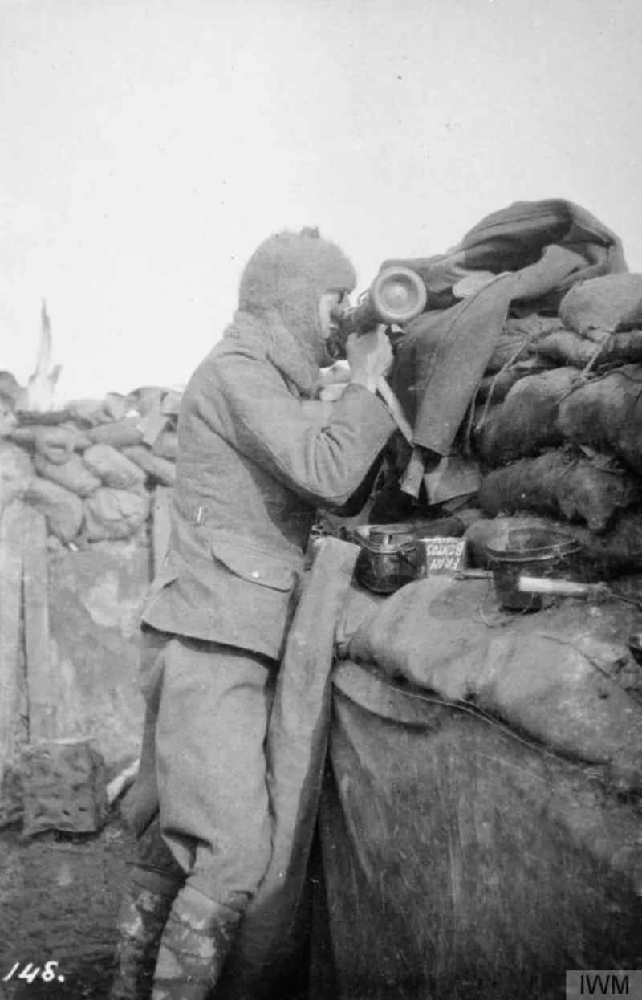

1914 was the end, not the beginning, until 1943
AdmittedThe Watchtower's own publications admit these facts. You can make this point from their library alone.
What Witnesses are taught today
They are taught that the organization alone saw 1914 coming. On that account, 1914 is when Christ began to rule unseen.
It is the founding fact of the religion.
What the founder actually printed
Charles Taze Russell taught that Christ's unseen presence had already begun, in 1874. He taught that 1914 would be the finish, not the start.
In The Time Is at Hand (1889, p. 101) he wrote that the battle of the great day "will end in A.D.
1914 with the complete overthrow of earth's present rulership." He said it had already begun.
How the story was rebuilt
1914 brought a war, but no overthrow. So 1914 was turned from an end into a beginning.
The 1874 presence was kept for decades. Prophecy (1929, p.
65) still taught it. The move to 1914 was not finished until The Truth Shall Make You Free (1943, p.
324). The signature doctrine was retrofitted 29 years late.
Their answer, at full strength
Their own history book admits the early hopes were wrong. Proclaimers (1993) says the Bible Students were not sure what would happen, and had expected more.
Defenders say the core insight held. Alone among religious bodies, they named 1914 decades in advance, and 1914 did break the old world order.
The apostles asked whether the kingdom was coming then, too (Acts 1:6). They were wrong about timing and right about weight.
Later light corrected the frame (Proverbs 4:18).
How strong is this argument?
They admit this themselves, in their own books. But the defense inverts the record.
Everything actually predicted for 1914 failed. The one thing now claimed for it was not taught until 1943.
A prediction whose content is swapped afterwards fails the test in Deuteronomy 18:22.
What to say
"Russell taught that Christ came back in 1874 and that 1914 was the end. When did that change, and who changed it?"


How they answer this — at its strongest
They named 1914 decades early, and 1914 did break the old world order.
The Watchtower's own history volume admits the early hopes were mistaken. Proclaimers (1993) says the Bible Students 'were not completely sure what would happen,' and had expected more. Defenders argue the core insight held up. Alone among religious bodies, Russell's movement named 1914 decades in advance. And 1914 did shatter the old world order.
The apostles asked 'Lord, are you restoring the kingdom at this time?' (Acts 1:6). They were wrong about the timing and right about the weight. Later light corrected the frame (Proverbs 4:18). That is how a growing grasp of Scripture is supposed to work.
The verdict
They admit it themselves. But everything actually predicted for 1914 failed.
Graded admitted, because the raw facts are all printed in the Society's own books. The 1874 presence. 1914 as the end. And the 1943 move. Proclaimers grants the failed hopes, then presents what survived as prophetic success.
The 'they predicted 1914' defense inverts the record. Every specific thing predicted for 1914 failed. Armageddon complete. God's kingdom in full earthly power. The saints glorified. The one thing now claimed for 1914 is an unseen enthronement, and that was not the teaching until 1943.
A prediction whose content is swapped after the fact confirms Deuteronomy 18:22 rather than escaping it.
Sources
- JWFacts — 1914: failed predictions and falsified history
- Watchman Fellowship — Jehovah's Witnesses and the History of 1914
- The Time Is at Hand, original edition scan (Internet Archive)
- JWFacts — 1800s date predictions